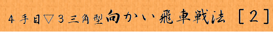

「図１」までの手順
▲７六歩 ▽３四歩 ▲２六歩 ▽３三角 ▲４八銀 ▽２二飛
▲６八玉 ▽４二銀 ▲７八玉 ▽６二玉 ▲５六歩 ▽５四歩
▲５七銀 ▽７二玉 ▲６六歩 ▽８二玉
 |
|
|||
|
本章では居飛車側が最も手堅く進めた場合の指し方を御紹介します。 「図１」までの手順 ▲７六歩 ▽３四歩 ▲２六歩 ▽３三角 ▲４八銀 ▽２二飛 ▲６八玉 ▽４二銀 ▲７八玉 ▽６二玉 ▲５六歩 ▽５四歩 ▲５七銀 ▽７二玉 ▲６六歩 ▽８二玉 |
||||
| Figure 1
|
後手の４手目▽３三角に角交換せず▲４八銀とし、▽２二飛と振って来ても飛車先を２六で止めて徹底して後手の急戦を封じます。 ここで▽８八角成と後手から交換しても、その後に急襲する手が有りませんので、普通に駒組みを進めて行く事になります。 先手は角道が開いたままでは玉を固め難いので、▲６六歩として持久戦を目指します。 「図１」から「図２」までの手順 ▲５八金右 ▽９二香 ▲７七角 ▽９一玉 ▲８八玉 ▽８二銀 ▲７八銀 ▽７一金 ▲２五歩 |
|||
| Figure 2
|
５２章で解説した居飛車の左美濃に対し、後手は▽９二香から▽９一玉と更に堅固な”穴熊囲い”を構築して行きます。 この穴熊囲いは玉の守備として最強の物ですが手数が掛かるのが難点です。 しかし先手が後手の４手目▽３三角としての向かい飛車を警戒して守勢に回ったので、囲い完成まで仕掛けられる心配が無くなったのです。 「図２」から「図３」までの手順 ▽５二金 ▲６七金 ▽５三銀 ▲９六歩 ▽６四歩 ▲８六歩 ▽７四歩 ▲８七銀 ▽６三金 ▲７八金 ▽４四銀 ▲３六歩 ▽５五歩 ▲４六歩 ▽５二飛 ▲５五歩 ▽６五歩 ▲同 歩 ▽５五銀 |
|||
| Figure 3
|
「図３」は途中の手順は違いますが第６２期名人戦第１局に現れた局面です。挑戦者の森内竜王・王将が羽生名人・王座に対して、 出だしは別戦型ですが、やはり角道を止めず▽３三角と上がる策を後手番で採用し「図３」から完勝したのです。 通常の振り飛車だと角を攻めに使おうとすれば▽４四歩と止まっている歩を▽４五歩としてからでないと「図３」のような攻撃態勢は作れませんから、 結果として２手早く攻める事が出来るのです。 「図３」では▲５六歩と打っても▽６六歩とされて後手の攻めは止まりません。 ▽６五歩と突き捨ててから▽５五銀とした手筋が重要なポイントです。 この駒組みは一つの例ですが、振り飛車にとって居飛車側の急戦は常に警戒すべき手段なので、 それを封じて尚且つ先手を取って攻勢に出られると言うのは魅力ではないかと思います。 そう言う意味で４手目▽３三角とするこの向かい飛車は、かなり有力な戦法と言えます。 |
|||

|
||||